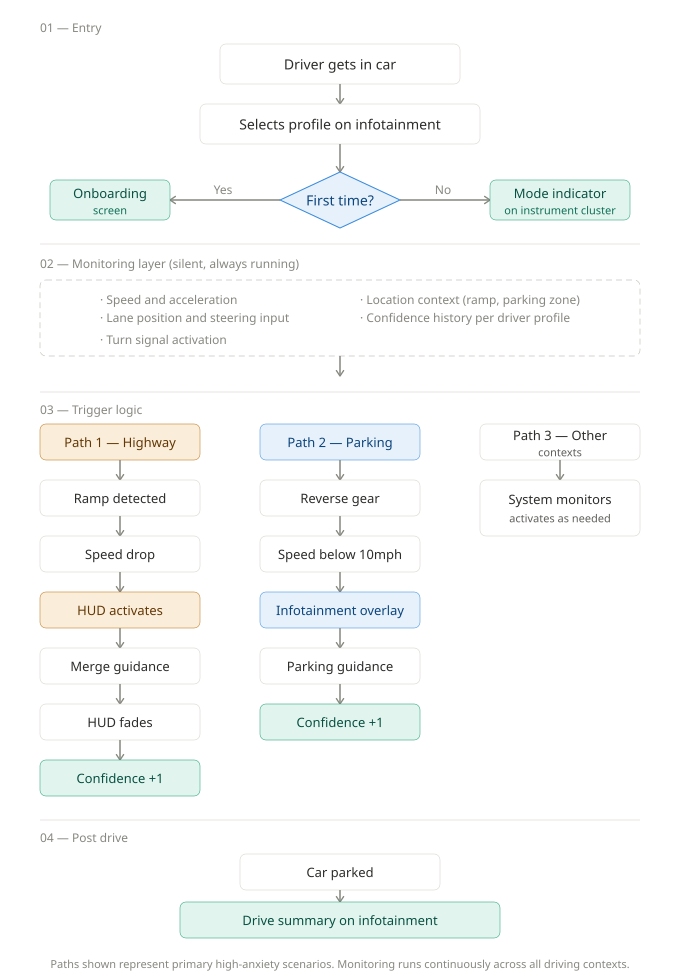
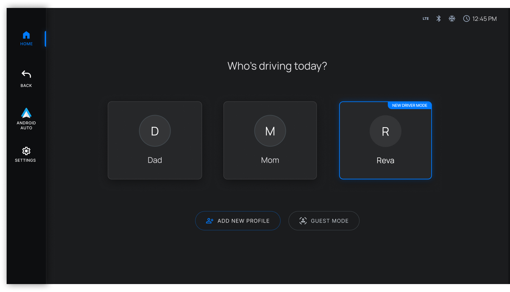
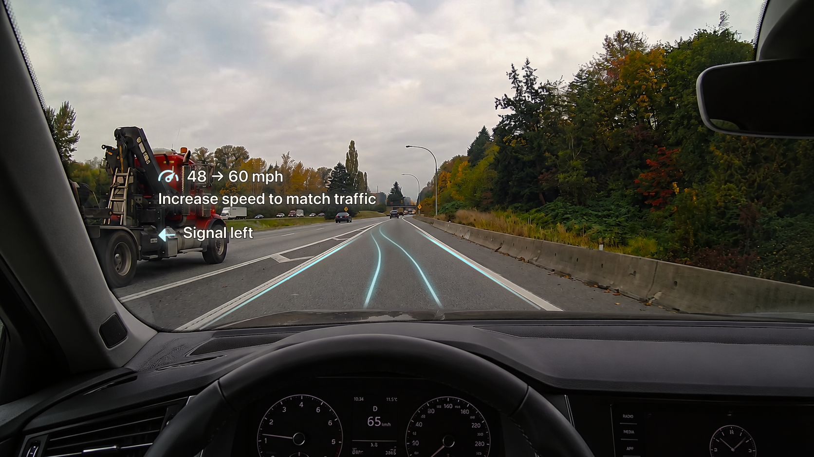
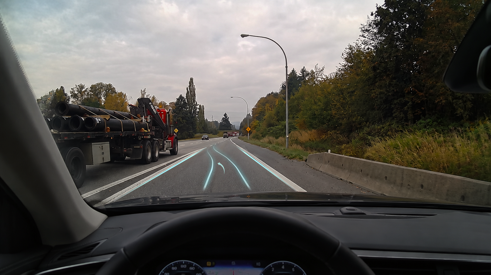
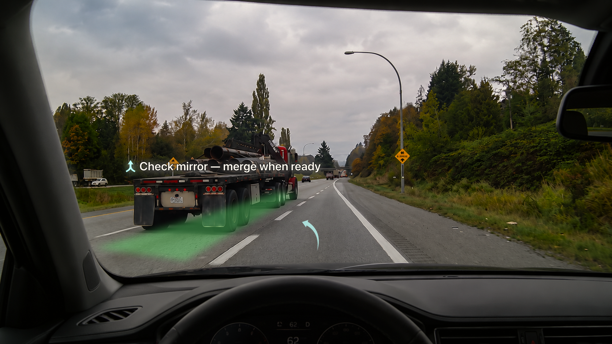
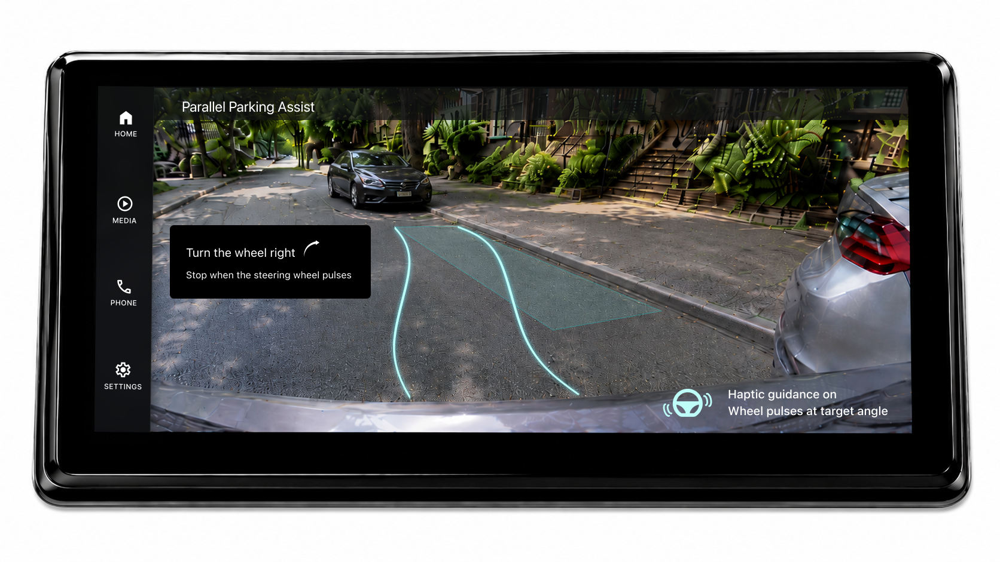
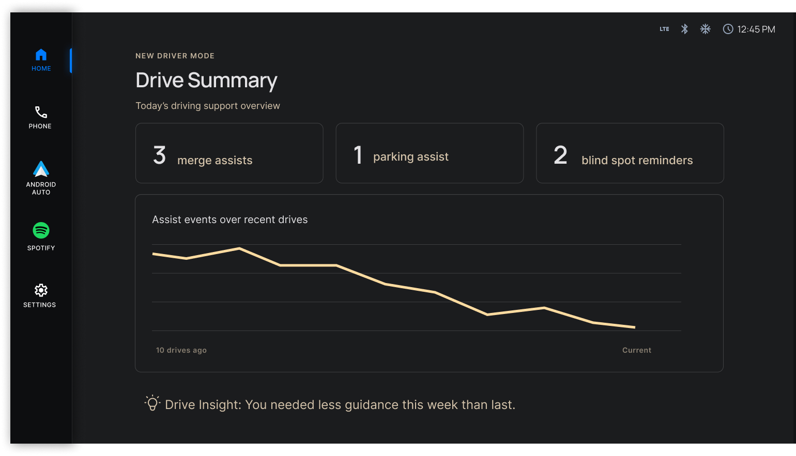

Where this started
That's not an edge case. Scroll through r/NewDrivers and you find the same story told a thousand different ways. Death grip on the wheel. Heart rate spiking before a highway merge. Slowing down on the ramp because panic overrides everything they learned in driving school.
New drivers don't struggle because they lack knowledge. They struggle because anxiety overrides what they know.
And every automotive AI system today is designed for drivers who've already conquered that fear.
The problem
While automotive companies race to embed AI into vehicles for experienced drivers, new drivers remain entirely overlooked. How might we design an in-car intelligent system that knows when to guide and when to get out of the way?
What I learnt from real new drivers
I spent time in communities like r/NewDrivers and r/LearnToDrive, reading posts from people actively learning to drive. Three themes emerged consistently.
Theme 01
Anxiety overrides knowledge
"It felt like I forgot everything I learned in the theoretical driving course because I felt so overwhelmed with all the new stimuli."
Theme 02
Highway merging is the peak anxiety moment
"I end up slowing down to a speed I shouldn't, in my panic, and always have to squeeze in by flooring it when there's finally an opening."
Theme 03
The gap between knowing and doing
"I know how to parallel park, but I've never parallel parked between 2 cars before and I feel quite anxious about attempting it."
What already exists — and where it falls short
Before designing, I looked at what already exists for new drivers.
Ford MyKey restricts speed, limits audio volume, and prevents certain safety features from being disabled. It gives parents control but offers the driver no guidance or support.
Mercedes MBUX Beginner Mode caps acceleration and speed. More sophisticated than MyKey but still fundamentally the same approach: restriction, not support.
Both systems assume the problem is behavior. Neither addresses the anxiety driving that behavior in the first place.
| System | Approach | What it misses |
|---|---|---|
| Ford MyKey | Speed and audio restrictions | No contextual guidance |
| Mercedes MBUX | Acceleration and speed limits | No anxiety awareness |
| New Driver Mode | Adaptive HUD guidance | Addresses fear, builds confidence |
Design principles
These four principles guided every design decision in the project.
Principle 01
Activate only in high-stress moments, not constantly
Principle 02
Account for fear, not just lack of knowledge
Principle 03
Guidance surfaces automatically based on context
Principle 04
Step back as the driver builds confidence over time
System map
Before opening Figma, I mapped the complete system logic. The goal was to understand how the AI would behave across every scenario before designing a single screen.
Entry — The driver selects their profile at ignition. New Driver Mode loads automatically with their saved confidence history.
Monitoring — The system runs silently in the background at all times. It never interrupts unless a trigger condition is met.
Guidance — Three trigger paths activate contextual guidance: highway merge, parallel parking, and silence when no intervention is needed.

The design
Current ADAS systems speak in alerts: beeps, flashes, warnings. This system speaks in guidance: calm, contextual, human. It translates what the car knows into what the driver needs to hear, at exactly the right moment.
Profile selection

When the driver gets in the car, the first thing they see is a familiar profile selection screen. Reva's profile carries a small New Driver Mode badge. The only visual difference from other profiles. No warnings, no restrictions messaging, no stigma.
The mode activates silently the moment she selects her profile. New Driver Mode should feel like support, not surveillance.
Highway merge — three states
The sequence is built around one research insight: new drivers don't freeze because they lack knowledge. They freeze because anxiety overrides what they know.

State 01 — System speaks
Build speed. Signal left. System is present and guiding.

State 02 — Silence
Driver has signaled. System goes quiet. Just a path. The absence of instruction is itself a signal: you're doing it right.

State 03 — System speaks again
Gap opens. Green highlight marks the zone. "Check mirror — merge when ready." The driver makes the final decision.
Color language
Cyan
Lane lines — system is monitoring, aware of driver position
White
Guidance text — calm, readable in any lighting condition
Green
Gap detected — action available, go signal
Amber
Progress and encouragement — used only on post-drive dashboard
Parallel parking

Guidance activates automatically when the system detects parking intent through a combination of low speed, turn signal, location context and reverse gear. No additional interaction needed.
Step by step instructions and distance indicators appear on the camera feed. A haptic pulse on the steering wheel confirms when the wheel reaches the optimal turning angle, building physical muscle memory without requiring the driver to look away from the camera.
Text treatment differs intentionally from the HUD. Infotainment guidance uses a contained text element for maximum readability from the driver's seated position.
Drive summary

Not a score. Just honest data. Assist events across the last ten drives shown as a simple trend graph. A line that, over time, should trend downward.
One quiet amber observation at the bottom: "You needed less guidance this week than last." No celebration. The driver draws their own conclusion.
Technical feasibility
A natural question when designing driver guidance: how does the car actually know when to guide?
The answer lies in sensors already present in most modern ADAS-equipped vehicles. Blind spot monitoring detects adjacent lane traffic. Radar measures gap distances and speed differentials. GPS knows ramp geometry and parking zones. Steering input sensors detect wheel position and turning angle. Reverse gear activation triggers the parking camera.
This project doesn't propose new hardware. It proposes a UX layer that synthesizes existing sensor data into calm, timely, human-readable guidance for a new driver.
This is a speculative concept. The goal was to define the interaction model and surface the design questions worth asking, not to propose a production-ready solution.
System considerations
Thinking beyond the happy path shaped several important system decisions.
Multiple drivers, one car
Progress is tied to the driver profile, not the vehicle. Each profile tracks independently. When a parent drives the same car, New Driver Mode simply doesn't activate for them.
Returning after a long break
Confidence can reset after an accident or extended time away. The system detects inactivity and offers a recalibration option rather than assuming the driver is at their previous level.
When to stop using the mode
The system suggests reducing guidance over time based on usage patterns. But the driver decides when to turn it off entirely. That control always stays with them.
How progress is communicated
The system never asks the driver to manage their own progress. It tracks silently in the background and communicates through behavior — guidance appearing less frequently over time rather than through scores or notifications.
Designing against reliance
One concern that came up early in the design process was automation bias, the tendency for humans to over-rely on automated systems and lose the ability to perform without them. Aviation has struggled with this for decades. It's why pilots still do manual landings regularly, to maintain proficiency.
New Driver Mode could easily fall into the same trap. The design addresses this in three ways. Guidance activates only in high-anxiety moments, not as a constant presence. It steps back progressively as the driver completes scenarios independently. And the Drive Summary shows assist events trending downward over time, making the reduction in guidance visible and meaningful.
The goal was never to make drivers dependent on the system. It was to build the muscle memory and judgment that makes the system unnecessary.
Why this makes business sense
New Driver Mode isn't just a safety feature. It's a purchase decision.
Parents buying their teenager's first car will actively choose a vehicle that offers intelligent guidance over one that only restricts. The new driver who builds confidence in a particular vehicle becomes a loyal customer for the next 20 years.
Reflection
This project challenged me in ways I didn't expect.
Designing for a high-stakes environment meant every decision had a real consequence. There was no room for decoration. Every element on the HUD had to earn its place because the wrong guidance at the wrong moment isn't just bad UX, it's a safety risk.
The most unexpected outcome was how it changed how I observe. Every time I sat in a car, even as a passenger, I found myself watching how drivers interact with their systems, timing how long a highway ramp actually takes, noticing hand movements, eye movements, how people handle unexpected situations. I became a much more attentive observer.
This time I wasn't designing good looking screens. I was designing a safety experience. That shift changed how I think about design.